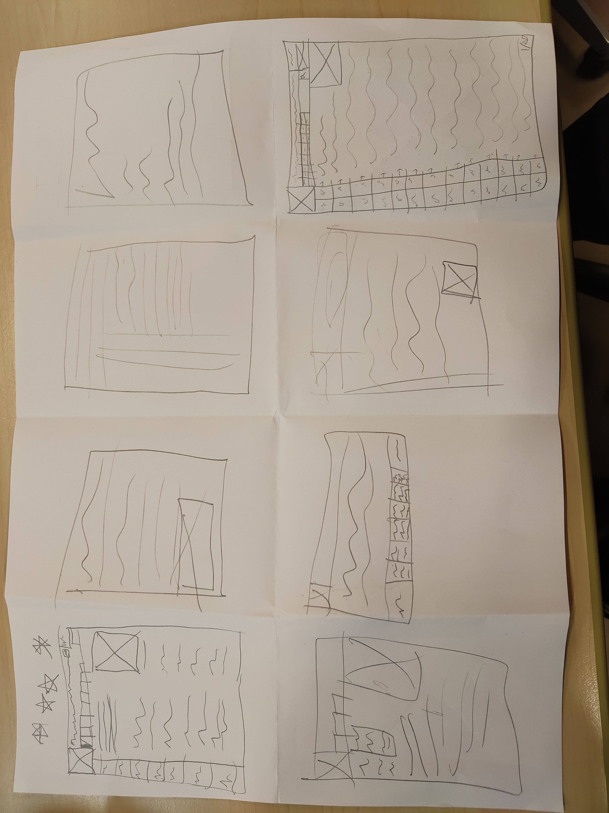
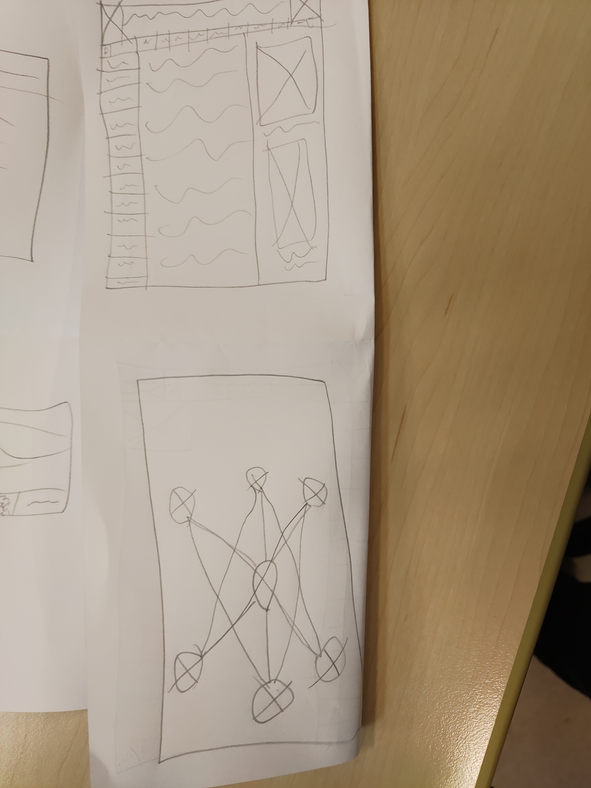

Grundforløb
25-8-2020
Vi har fået en fælles introduktion til HTML. Jeg har lært en helt masse "tags" f.eks <p> tagget, som bruges når man laver paragraffer.
Vi lærte også om <h1-h6> tagsene, hvor <h1> har den største tekst, og <h6> har det mindste teskt
14-9-2020
Vi har lavet videre på vores studieweb på egen hånd, ved hjælp af nogle tutorials på nettet
22-9-2020
Vi har lært om CSS, som er ligesom "huden" til vores hjemmeside, i modsætning til HTML som fungerer mere som knoglerne af hjemmesidebygning
28-9-2020
Vi har lavet videre på vores hjemmeside, og lært hvordan vi overfører vores hjemmeside til skolens servere, ved brug af FTP client'en FileZilla
06-10-2020
Vi har begyndt på at kigge på brugervenligheden på hjemmesider, og grubler over hvad der gør en hjemmeside brugervenlig. Vi har lavet korte skitser på hvordan en brugervenlig side kan se ud
 23-10-2020
Vi har lavet videre på skitser til hjemmesider, og har valgt én skitse, som vi laver større og har behandlet mere på den
29-10-2020
Vi har startet på en 'opgave' - Digitale billeder, hvor vi har lært om raster, og vektor grafik, og hvordan man behandler et billede
20/10-2020, digitale billeder
Vi begyndte at redigere billeder med Gimp.
21/10-2020, digitale billeder fortsæt
Vi beskrev billeder med pixels og lærte om bits, bytes og pixels.